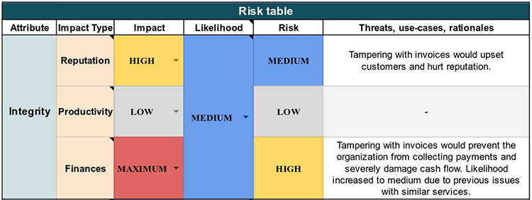
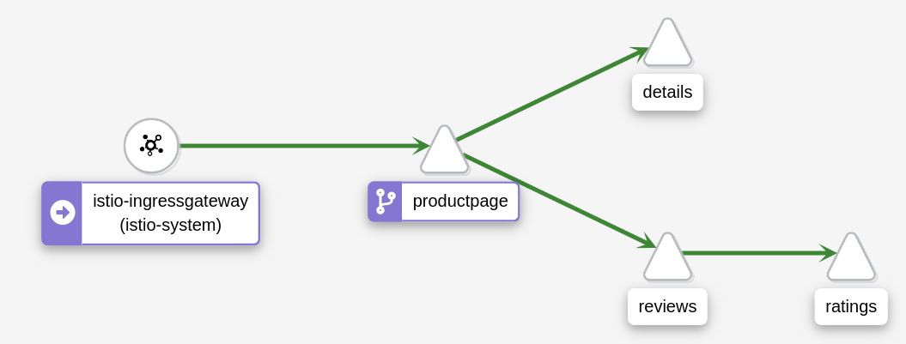
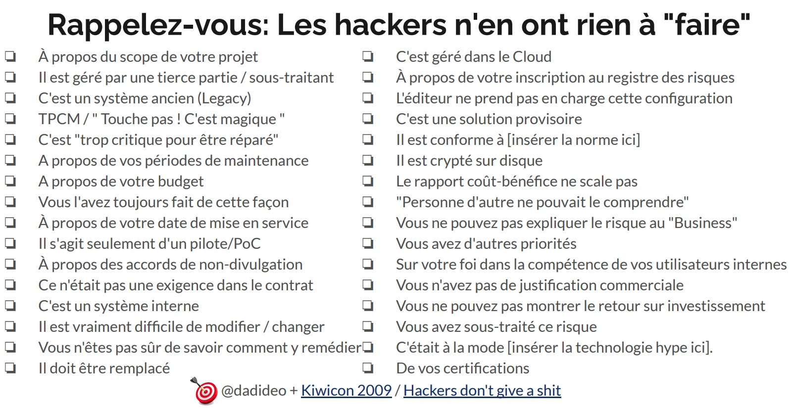

Votre entreprise a connu une croissance inattendue, des carnets de commandes qui débordent, un tas d'idées nouvelles de projets, et avec la crise actuelle outre-atlantique touchant les GAFAM, la conjecture n'est pas favorable à recruter massivement.
De plus, votre dernier produit de l'équipe a connu un succès fou, DevoxxGPT. Tous les médias en parlent, les serveurs tiennent tant bien que mal à la charge, et après quelques analyses de logs, vous remarquez que certains petits malins réussissent à bénéficier de l'offre commerciale, sans débourser le moindre sou.
Avec l'euphorie des développeurs, et l'engouement des utilisateurs, vous avez mis en production de nouvelles fonctionnalités dans la précipitation, sans revue préalable, ni la réalisation de test d'intrusion.
Vous ne voyez plus qu'une solution, face à la charge de travail déjà colossale dans l'équipe, l'application immédiate de la méthologie DevSecOps: pour sécuriser votre outil et maintenir la position de l'entreprise sur son piédestal. Car vous devez éviter, à tout prix pour votre image, la fuite de toutes vos données clientes, ainsi que vos secrets de fabrication, comme ce fût le cas pour Twitch, le 6 Octobre 2021.

En guise d'encouragement, votre CTO cite Google avec son livre Building Secure and Reliable Systems (xxvi | Preface): "Parce que la sécurité et la fiabilité sont l'affaire de tous, nous visons un large public : les personnes qui conçoivent, mettent en œuvre et maintiennent les systèmes. Nous remettons en question les lignes de démarcation entre les rôles professionnels traditionnels des développeurs, des architectes, des SRE des administrateurs de systèmes et des ingénieurs en sécurité."
Objectif: Vous vous retrouvez donc, à devoir mettre en place cette méthologie, en plus de votre activité habituelle...
David Aparicio
Ingénieur passionné en Informatique, diplômé INSA Lyon 2014, après deux années passées à UNICAMP au Brésil, participe activement à la communauté, à travers des Meetups et des conférences. Sa devise: « Nul développeur n'est censé ignorer la sécurité ».
J'ai rejoint OVHcloud en juillet 2019 en tant que DataOps au sein de l'équipe GIS-Datalake.
Christopher Aparicio
Responsable du Back-end chez 42Crunch et développeur de la solution d'Audit et de Scan
PS: Comme vous pouvez en doutez, les entreprises qui nous emploient, continuent à recruter activement ;-)
Le saviez-vous ?
Une étude de 2017 a démontré que 98% des snippets de code sur StackOverFlow concernant la thématique de la sécurité ne sont pas sûrs. Un comble n'est-ce pas ?
Cela est même devenu un sujet de conférence au FOSDEM en 2019 Comment éviter les pièges cryptographiques par la conception ?.
Et l'IA souffre des mêmes biais
Une étude de 2021 de l'université de New York a montré que 40% du code proposé par GitHub Copilot n'était pas sécurisé, présentant des failles applicatives.
Donc ChatGPT ne devrait pas tarder à subir ce genre d'études avec un même ordre de grandeur. De même pour l'OpenAI Codex ou la toute dernière version d'OpenAI GPT-4 dans GitHub Copilot X.
Afin d'éviter ceci
Le déroulement de la cyberattaque par un rançongiciel contre le CHU de Rouen en 2019 (thread @zigazou).
Ou un autre exemple, parmi tant qu'autres sur la Sécurité Dès la Conception, extrait du magazine le 44e Virus Info (2020)

Un constat, en l'espace de 8 ans, le Top 10 des attaques n'a pas évolué. Ce classement est realisé et mis à jour par l'OWASP, Open Web Application Security Project, une organisation internationale à but non lucratif qui se consacre à la sécurité des applications web.
42Crunch a realisée une vidéo sur le Top10 des API (2019)

Ce que nous allons réaliser durant ce workshop
- Suivre la méthologie DevSecOps
- Modéliser la menace
- Outiller son éditeur de texte ou IDE favori
- Appliquer la sécurité as code, en ayant une confiance nulle (Zéro Trust)
- Programmer des tests de sécurité
- Configurer des tests statiques et dynamiques des applications
- Activer la signature numérique
- Transférer les binaires de manière sécurisée
- Mettre en place des scans et des patchs de sécurité
- Étudier les Audits de sécurité
- Monitorer et alerter sur les menaces actuelles
Pour catégoriser les outils et les différentes étapes, de la DEV jusqu'à la PROD, en passant par le cycle de vie et la maintenance de l'application, on se base sur les bonnes pratiques de la "US DoD Enterprise DevSecOps Reference Design" (du Département de la Défense américaine), publiées à l'adresse suivante : https://public.cyber.mil/devsecops/
Et nous allons plus précisément nous attarder sur le diagramme/Figure 1 à la page 19/89. Êtes-vous prêt.e.s ? Alors allons-y !
Planifier: Modélisation de la menace (le fameux Threat Model)
Avant de partir dans les spécifications de notre MVP et la programmation itérative, nous devons réunir toute l'équipe autour d'un ou plusieurs ateliers sur l'Analyse du Risque. Mozilla nous propose le format de 30 minutes du RRA : Analyse/évaluation rapide des risques (anglais).

Et les guides de l'ANSSI, comme l'"Agilité & Sécurité Numériques" présente les ateliers à réaliser ainsi que le vocabulaire adéquat, comme la définition du DICT:
- Disponibilité
- Intégrité
- Confidentialité
- Preuve
et donne quelques cas pertinents, par exemple
Vous pouvez désormais avoir quelques user stories "sécurité".

Pour vous aider, voici un tableau d'identification de l'attaquant :
Enfin, pour illustrer une attaque d'ampleur préparée par un attaquant isolé, nous vous recommandons l'écoute ultérieure de la fiction de France Inter « La nuit tous les hackers sont gris ».
Pour notre atelier, on vous laisse ces informations pour réaliser ces spécifications ultérieurement.
Après ces définitions, passons à la pratique en rédigeant un petit document SECURITY.md dans votre repôt de code. La "Security Policy", politique de sécurité décrit comment vous allez supporter vos versions et surtout permettre à vos utilisateur.trice.s de pouvoir remonter des bugs ou des failles de sécurité à travers un canal sécurisé avec vous, développeur.se.
Un exemple pour le proxy Traefik ou celui d'un autre repôt. Comme autre source d'inspiration, voici la documentation K8s sur le sujet: Kubernetes Security and Disclosure Information (en)
Objectifs de cette étape:
- Copier l'une d'entre elles pour la modifier ultérieurement
- Préparer un formulaire de signalement (facultatif)
Planifier: Réduction de la menace
Réduire la surface d'attaque est très courant dans le monde de la sécurité, d'autant plus, depuis l'essor des containers. Snyk a dénombré 78% des vulnérabilités d'applications, dans les dépendances profondes/internes (c'est à dire, à minima, les dépendances de vos dépendances). Notamment, les images Docker "node" ou "postgres" peuvent embarquer les failles de Debian ou d'Alpine, puisqu'elles sont construites par-dessus. Il en va de même pour les containers basés sur d'autres systèmes d'exploitation.
Pour notre MVP ou bien même pour nos projets finaux: Faut-il implémenter une solution complète d'authentification, avec le choix de l'algorithme de chiffrement en BDD ainsi que les sels (salt) à utiliser ? Ou pouvons-nous nous contenter d'utiliser celui du framework ? Un mot de passe fort est-il indispensable (et donc oubliable par l'utilisateur) ? Pourquoi ces questions ? Car la désactivation des fonctionnalités inutiles permet de limiter les risques de sécurité.
De plus, nous savons que les mots de passe sont une contrainte pour la plupart de nos clients. Dans le papier "Secrets, Lies, and Account Recovery [...]" à la conférence internationale WWW'15, Google relève que plus d'1/5 de ses utilisateurs oubliaient leurs mots de passe de leur compte ainsi que la réponse à la question secrète dans les 3 premiers mois.
Plus récemment, en 2021, ANSSI recommande l'utilisation de coffre-forts (KeePass) et de l'authentification multi-facteurs au lieu de forcer le changement régulier des mots de passe (car contre-productif). Microsoft, Apple et Google ont annoncé le 5 Mai 2022, le souhait de supprimer les mots de passe, dès 2023 grâce à la norme WebAuth ainsi que FIDO.
De ce fait, est-ce possible et acceptable pour votre projet d'utiliser de l'OpenID Connect, de l'OAuth2 ? Ou au contraire un outil SaaS comme Magic, un logiciel open source dit passwordless tel que passport-magic-login qui envoie un lien temporaire à l'email demandé ? Sinon, dans le cas où vous utilisez une authentification basique : votre outil se protège-t-il bien contre les injections ? Tolère-t-il des limites d'essais/compte ? Bannit-il des IP après un trop gros nombre de tentatives ? Utilise-t-il des sels avec des algorithmes de chiffrement à jour ?
Ce sont les questions que nous devons nous poser, selon le risque pris et le type d'attaquant. Cet exemple concerne la brique d'authentification, mais cela s'applique également aux autres éléments qui composent votre système.
Illustration de ce chapitre, avec l'obligation du MFA (Authentification multifacteur/Multi-factor authentication) chez Heroku (probablement la conséquence de leur politique sécurité, suite à la faille majeure/incident impliquant le réinitialisation de tous les mots de passe clients)
Poursuivons avec la suite de l'atelier :D
Développer : Code sécurisé
Dans la philosophie du "Security Shift-Left", nous allons nous outiller afin de remonter directement dans l'éditeur ou l'IDE du développeur. Il existe déjà les "linters" pour chaque langage de programmation (ShellCheck, golangci-lint, etc ...), mais également des extensions dédiées à la sécurité et la liste est longue (pourtant pas exhaustive): SonarLint, Sonatype Nexus IQ, Snyk, Qualys IaC, RedHat Dependency Analytics, GitHub Code Scanning, JFrog XRay... Et la liste complète pour VSCode est disponible
D'autant plus, que leur nom change régulièrement au fil des rachats, exemple avec DeepCode.AI (acheté par Snyk) ou Mend Advise (ex-WhiteSource), ou sont spécifique à un langage comme C#/XML avec Microsoft Security IntelliSense, node.JS avec npm audit, Redshift Security pour Java, gosec pour Go.
Pour les utilisateurs de Github Copilot, s'il est installé dans votre IDE, l'extension devrait vous faire quelques remontées par rapport à des attaques classiques (injections SQL et cie) d'après leur site...
En plus des linters, il faut aussi consulter différents guidelines de son language pour se perfectionner. Par exemple, même Bash a les siens comme celui de Google ou le fait d'"accept sensitive data only via files, e.g. with a –password-file argument, or via stdin".
Enfin, en anglais, quelques règles élémentaires et son résumé
Objectifs de cette étape:
- Installer une ou plusieurs extensions pour votre éditeur ou IDE favori.
- Par exemple, Snyk Code (lien pour VSCode)
- Si vous développez souvent des API ou des spécifications format OpenAPI (Swagger), nous vous recommendons l'installation de l'extension de 42Crunch (lien pour VSCode, Eclipse, JetBrains)
Illustration avec GitHub Code Scanning
En préparant cet atelier pour la conférence DevoxxFR2023, mon collègue, Christopher Aparicio, a continué à contribuer pour DevoxxGPT. En activant sur tous mes repositories Github, Dependabot & cie, à travers ce menu, automatiquement, Dependabot me remonte les failles de sécurité de notre code. La prevue en images (ou plutôt en ligne de commande, durant les fameux git pull/push) :
git pull (Dependabot a ouvert automatique 3 PR pour fixer les failles, maintenant à moi de les tester)
devsecops-workshop-devoxxfr23 on main [⇡] took 32s
❯ git pull
remote: Enumerating objects: 23, done.
remote: Counting objects: 100% (23/23), done.
remote: Compressing objects: 100% (18/18), done.
remote: Total 18 (delta 15), reused 0 (delta 0), pack-reused 0
Unpacking objects: 100% (18/18), 4.12 KiB | 111.00 KiB/s, done.
From github.com:davidaparicio/devsecops-workshop-devoxxfr23
* [new branch] dependabot/go_modules/petstore/api/github.com/labstack/echo/v4-4.9.0 -> origin/dependabot/go_modules/petstore/api/github.com/labstack/echo/v4-4.9.0
* [new branch] dependabot/go_modules/petstore/api/golang.org/x/net-0.7.0 -> origin/dependabot/go_modules/petstore/api/golang.org/x/net-0.7.0
* [new branch] dependabot/go_modules/petstore/api/golang.org/x/text-0.3.8 -> origin/dependabot/go_modules/petstore/api/golang.org/x/text-0.3.8
Already up to date.
git push (GitHub me signale 4 vulnérabilités, dont 1 critique)
devsecops-workshop-devoxxfr23 on main [⇡] took 7s
❯ git push
Enumerating objects: 9, done.
Counting objects: 100% (9/9), done.
Delta compression using up to 4 threads
Compressing objects: 100% (6/6), done.
Writing objects: 100% (6/6), 1023.91 KiB | 15.28 MiB/s, done.
Total 6 (delta 2), reused 0 (delta 0), pack-reused 0
remote: Resolving deltas: 100% (2/2), completed with 2 local objects.
remote:
remote: GitHub found 4 vulnerabilities on davidaparicio/devsecops-workshop-devoxxfr23's default branch (1 critical, 3 high). To find out more, visit:
remote: https://github.com/davidaparicio/devsecops-workshop-devoxxfr23/security/dependabot
remote:
To github.com:davidaparicio/devsecops-workshop-devoxxfr23.git
3040a1d..698757c main -> main
Développer : Sécurité comme Code
D'après O'Reilly, SaC (Security as Code) consiste à intégrer la sécurité dans les flux DevOps, alias CI/CD. Néanmoins, si l'outil n'est pas trop gourmand en ressources, il peut être installé dans l'éditeur. Car nous avons des ordinateurs plus puissants, grâce à l'apparition des puces ARM ou les IDE en ligne, comme AWS Cloud9, Gitpod, ou GitHub Codespaces. Au niveau des containers sécurisés, des implémentations existent avec gVisor, les Kata Containers et les Confidential containers.
D'une part, l'application de la configuration (HBAC, RBAC, règle pare-feu) peut-être une opération critique en cas d'oubli (bucket S3 accessible en public sur Internet, base de données sans mot de passe). Il est préférable de déclarer son besoin avec des fichiers et de laisser l'orchestrateur les réaliser plutôt qu'agir de manière impérative sur le système.
Par exemple, le projet Cilium permet d'interagir avec le réseau et d'appliquer des politiques de sécurité. De plus, les maillage de services (services-mesh) comme Istio, Traefik maesh ou Solo.io avec GlooEdge génèrent automatiquement des certificats SSL et ne laissent passer ainsi que les communications sécurisées entre vos containers. D'autres projets existent comme: Flannel, Calico ou Weave.
D'autre part, les commandes docker scan, trivy image mon_Image_Docker:tag analysent les vulnérabilités connues de votre Dockerfile. Avant de pousser du code contenant des secrets, un hook peut-être installé avec GitGuardian, ggshield, Trivy (trivy fs —security-checks secret ./) ou le projet awslabs/git-secrets. Comme l'erreur est humaine, il est préférable d'automatiser toutes ces actions et analyses. Nous vous recommendons le visionnage de cette vidéo explicative de ce qui faut faire en cas d'incident/de fuite (en anglais).
Au final, en plus de la modélisation de l'attaquant et des risques, il faut aussi prendre en compte les différents flux, avoir des diagrammes d'architecture, comme celui ci-dessous... justement, c'est notre prochain sujet.

Développer : Environnement sécurisé
Nous allons définir les règles pour passer de la sécurité périmétrique (modèle de la forteresse de Vauban) avec l'approche de la confiance Zéro/Zero trust (modèle de l'aéroport)

Objectifs de cette étape:
- Définir les interactions de votre projet avec:
- les autres microservices
- les bases de données (SQL/NoSQL/Clé-Valeur)
- les messages brokers (Kafka/Pulsar/RedPanda & cie)
- les services d'annuaire (LDAP, Kerberos)
- Coder ces interactions (en déclarant/ouvrant les flux)
- à l'ancienne avec les règles pare-feu (iptables, ufw, etc)
- avec votre maillage de services (Service Mesh) comme:
- Istio avec Kiali
- Gloo Mesh, Linkerd Nginx Mesh
- Kuma, Consul, AWS App Mesh
- ou avec Cilium & eBPF
- Bonus: Étudier les projets SPIFFE & SPIRE, Hashicorp Boundary pour faire du Zero-Trust, ainsi que CrowdSec
Attention même au traffic sortant, comme le DNS
La réponse se cache dans la banalité, comme nous pouvons le lire en images

Objectifs de cette étape:
- Définir les interactions, même celles qui sembleraient être légitimes
- Reprendre l'exercice précédent, si besoin ;)
Compilation : Tests statiques de sécurité des applications
Le podium des SAST est Checkmarx, SonarQube, Veracode, suivi de OpenSCAP, Insider CLI (couvrant OWASP Top 10), PMD - Don't shoot the messenger, Mend Advise (ex-WhiteSource), Argon Supply Chain qui a rejoint Aqua, Brakeman, Codacy, Contrast Security, CyberRes, Find Security Bugs (Java), Grammatech, HCL AppScan, JIT.io, Klocwork, LGTM.com racheté par Github, Perforce SAST, Redshift renommé récemment en Software Secured probablement pour un différent juridique avec AWS, Snyk, SpectralOps, Synopsys Coverity, slscan.io, 42Crunch API SAST.
 Exemple: lorsqu'on crée un nouveau projet sur Gitlab. Ce dernier nous propose dès l'initiation du projet, d'activer le GitLab SAST.
Exemple: lorsqu'on crée un nouveau projet sur Gitlab. Ce dernier nous propose dès l'initiation du projet, d'activer le GitLab SAST.
Pour compléter, nous vous recommandons de visiter le site de la Fondation OWASP qui a un tableau (en anglais) et cette page sur ce sujet
Au niveau des systèmes de contrôle de version pour la gestion du code source, GitLab a son propre SAST intégré: principalement gratuit (à quelques fonctionnalités près) depuis la version GitLab 13.3.
Github a son équivalent avec CodeQL (ou vous pouvez intégrer un outil tiers à travers de la Marketplace). Il est activable facilement à partir du lien : https://github.com/MON_USER/MON_REPO/security/code-scanning
Compilation : Tests statiques de sécurité des applications
Nous allons activer CodeQL sur Github pour venir réaliser un scan lors des PR sur la branche main, ainsi que de manière hebdomadaire.
Si besoin, aidez-vous du site web Crontab Guru pour définir vos lancements automatiques. Voici un exemple de workflow (GitHub Action), GitHub lancera le scan tous les lundis à 3h17 du matin.
name: "Security Scan (CodeQL)"
on:
push:
branches: [ "main" ]
pull_request:
branches: [ "main" ]
schedule:
- cron: '17 03 * * 1'
jobs:
analyze:
name: Analyze CodeQL
runs-on: ubuntu-latest
permissions:
actions: read
contents: read
security-events: write
strategy:
fail-fast: false
matrix:
language: [ 'go' ]
steps:
- name: Checkout repository
uses: actions/checkout@v3
# Initializes the CodeQL tools for scanning.
- name: Initialize CodeQL
uses: github/codeql-action/init@v2
with:
languages: ${{ matrix.language }}
- name: Autobuild
uses: github/codeql-action/autobuild@v2
- name: Perform CodeQL Analysis
uses: github/codeql-action/analyze@v2
Objectifs de cette étape:
- Activer l'action GitHub de CodeQL
- Définir le language de programmation de scan
- Valider l'exécution correcte de sa GitHub action en réalisant une PR
- Modifier le jour et l'heure du cron (facultatif)
- Activer un deuxième outil, comme
gosecpour Go, ou SonarCloud (facultatif)
Le résultat sur PR (GitHub)
Visible directement sur Github ou sur l'image ci-dessous.
Note: CodeQL donne le même style de résultat que cet exemple avec GoSec. J'en ai profité pour activer la version gratuite de SonarCloud ;-)
Tenter de corriger une erreur remontée
Visible directement sur Github ou sur l'image ci-dessous.

Objectifs de cette étape:
- Si vous avez le temps,
- Fixer une des erreurs éventuelles remontées par CodeQL
- Committer dans une nouvelle branche, et créer une PR
- Vérifier que votre action a corrigé l'alerte remontée dans
https://github.com/VOTRE_PSEUDO/VOTRE_REPO/security/code-scanning/1
Compilation : Tests basiques de sécurité des applications (de bout en bout)
En effet, vous vous rappelez des conséquences de l'attaque contre fournisseur de données pour DevoxxGPT: NewsBlur. Pour éviter la même mésaventure, vous prenez les devant. Tester votre déploiement, en vérifiant les Best Practices en Sécurité.
Objectifs de cette étape:
- Codez deux petites fonctions de test qui valide (SUCCÈS) si elle n'arrive à se connecter à votre BDD sans identifiants, et ceux par défaut comme
admin:admin - Intégrez ce test dans votre CI/CD, pour valider la bascule Bleue/Verte (blue/green) avant la mise à jour progressive/rolling update (facultatif)
- Bonus: Implémenter d'autres tests avec d'autres mots de passes génériques/leakés sur internet, comme avec le dépôt de code GitHub ihebski/DefaultCreds-cheat-sheet

Test : Tests dynamiques de sécurité des applications
Comme vous pouvez vous en douter, ce thème converge un peu avec le sujet précédent. Au lieu d'analyser le code, l'outil va tester votre application de l'extérieur (en mode boîte noire/blackbox), tentant d'exploiter votre programme en cours d'exécution. Les logiciels DAST sont: OWASP Zed Attack Proxy (ZAP) avec l'opérateur Kubernetes banzaicloud/dast-operator, Dagda avec ClamAV, Indusface WAS, Invicti ex-Netspaker, Acunetix, Astra Pentest, PortSwigger, Probely, Detectify, AppCheck, Hdiv Security racheté par Datadog en 2022, AppScan, Checkmarx DAST, Rapid7 InsightAppSec, MisterScanner, XSStrike.
Au niveau des API, la version Ultimate de GitLab propose le DAST API (REST, SOAP, GraphQL), aussi pour les plates-formes de Probely, Intelligence/API Security Tester de Postman, Shift Left Security, 42Crunch. Une remarque concernant 42Crunch, l'entreprise française veut être l'outil audit-scan-protéger de l'API, à l'instar de Trivy, prévenir-protéger-détecter-réagir, pour la partie Cloud Native.
Démonstrations des fonctionnalités de 42Crunch
Cette partie sera faite en session live coding, durant l'atelier DevoxxFR2023.
Vulnerable REST API with OWASP top 10 vulnerabilities for security testing
Vous pouvez également, à la fin de l'atelier, jouer avec ce repo GitHub VAmPI
Une remontée des vulnérabilités du container d'API, à travers l'outil/registry Harbor.
Test : Pentest
Sauf si vous avez une équipe de pentesteurs en interne, ou vous êtes experts des outils Kali Linux, Parrot Security, hetty ou Burp Suite Pro, SuperTruder, ffuf, Metasploit..., il est possible de demander à une entreprise spécialisée de réaliser les pentests ou vous pouvez participer à un programme de Bug Bounty: YesWeHack, Yogosha, Open Bug Bounty, Hackerone, Bugcrowd, SafeHats, Intigriti, Synack.
Même les grands groupes utilisent ces techniques. En effet, Google a annoncé récemment (Février 2023) avoir attribué plus de 12 millions de dollars de récompenses en 2022 pour l'identification de plus de 2 900 problèmes de sécurité (cf ZDNet et le tweet de Stormshield).

Distribution : Signature numérique
SCA (Software Composition Analysis) et les SBOM (Software Bill Of Materials) permettent de générer la nomenclature logicielle : l'ensemble des packages du système d'exploitation ainsi que vos dépendances présentes dans votre programme ou dans votre image Docker.
Le site OWASP CycloneDX recense le standard dont les implémentations sont : Syft d'Anchore, tern-tools/tern, microsoft/sbom-tool, SPDX SBOM Generator et les produits de Dependency Track, FOSSA, Mend, Rezilion, TauruSeer, Vigilant Ops.
En effet, l'ENISA (Agence de l'Union européenne pour la cybersécurité) en analysant les attaques récentes ("Sunburst" avec Orion de SolarWinds, Mimecast CDN, Codecov, Kaseya, NotPetya) ont montré que les chaînes d'approvisionnement logicielles trop longues sont également une menace sérieuse. Dans le rapport de l'ENISA, nous pouvons lire: "une organisation peut être vulnérable à une attaque de la chaîne d'approvisionnement logicielles, même si ses propres défenses sont assez bonnes. Par conséquent, les attaquants tentent d'explorer de nouvelles voies potentielles pour les infiltrer en se déplaçant vers leurs fournisseurs et en faisant d'eux une cible".
Génération des SBOM avec GoReleaser et Syft
Reprenons notre programme écrit en Go, de tout à l'heure et y ajoutons une GitHub Action pour générer le SBOM avec Syft, pendant la génération des binaires par GoReleaser.
name: Release (GoReleaser)
on:
push:
tags:
- '*'
jobs:
goreleaser:
permissions:
contents: write
packages: write
deployments: write
id-token: write # needed for signing the images with GitHub OIDC Token **not production ready**
runs-on: ubuntu-latest
strategy:
matrix:
go-version: [1.19]
needs: [test] # sequential
steps:
- name: Checkout
uses: actions/checkout@v3
with:
fetch-depth: 0
- name: Set up Go
uses: actions/setup-go@v3
with:
go-version: ${{ matrix.go-version }}
cache: true
- name: Set up QEMU
uses: docker/setup-qemu-action@v2
- name: Login to Docker Hub
uses: docker/login-action@v2
with:
#registry: ghcr.io
username: ${{ secrets.DOCKERHUB_USERNAME }}
password: ${{ secrets.DOCKERHUB_TOKEN }}
- uses: sigstore/cosign-installer@v2.8.1 # installs cosign
- uses: anchore/sbom-action/download-syft@v0.13.3 # installs syft
- name: Run GoReleaser
uses: goreleaser/goreleaser-action@v4
with:
distribution: goreleaser
version: latest
args: release --rm-dist
env:
# https://goreleaser.com/errors/resource-not-accessible-by-integration/
GITHUB_TOKEN: ${{ secrets.GH_PAT }}
Objectifs de cette étape:
- Activer l'action GitHub de GoReleaser
- Lancer la pipeline pour générer les binaires
- Explorer le fichier SBOM créé
Transfert : Transfert sécurisé
Les gestionnaires d'artefacts, paquets d'OS, d'images Docker, les plus connus sont JFrog Artifactory, Sonatype Nexus, ProGet.
Il est possible de renforcer l'intégrité en certifiant vos images Docker avec Notary. Plus d'informations sur la documentation spécifique "Content trust in Docker"
Déploiement : Configuration sécurisée
Au niveau des SCM (Software Configuration Management Tools), les classiques sont : Ansible, Puppet, Chef, mais également Bamboo, TeamCity, Octopus Deploy, Rudder, Juju/JAAS, SaltStack, CFEngine, Auvik, SolarWinds.
Sans oublier de sécuriser vos secrets avec Hashicorp Vault, Akeyless Vault, Thycotic Secret Server renommé Delinea, les projets Mozilla/sops et cloudflare/gokey ou à travers de votre cloud provider par exemple AWS Secrets Manager.
Enfin pour maintenir une infrastructure immutable (IaC), il existe ArgoCD (avec le concept de Synchronisation), Driftctl de CloudSkiff, Magalix racheté par Weaveworks GitOps, Fairwinds Insights, le projet GitHub Kubediff de Weaveworks. Katia HIMEUR de chez Cockpitio parle de son Retour d'Expérience à ce sujet.
La combinaison Trivy+Cosign+Kyverno peut être utilisée pour imposer un déploiement sur Kubernetes d'une image docker sans vulnérabilité, avec un scan récent inférieur à X jours. Nous vous invitons à lire ce billet de blog
Pour votre connaissance, en voici son code pour la GitHub Action:
name: vulnerability-scan
on:
workflow_dispatch: {}
schedule:
- cron: '23 1 * * *' # Every day at 01:23
env:
REGISTRY: ghcr.io
IMAGE_NAME: ${{ github.repository }}
jobs:
scan:
runs-on: ubuntu-20.04
permissions:
contents: read
outputs:
scan-digest: ${{ steps.calculate-scan-hash.outputs.scan_digest }}
steps:
- name: Scan for vulnerabilities
uses: aquasecurity/trivy-action@1db49f532692e649dc5dc43c7c0444dac4790137 # v0.7.0 (Trivy v0.31.2)
with:
image-ref: ${{ env.REGISTRY }}/${{ env.IMAGE_NAME }}:latest
format: cosign-vuln
ignore-unfixed: true
output: scan.json
- name: Calculate scan file hash
id: calculate-scan-hash
run: |
SCAN_DIGEST=$(sha256sum scan.json | awk '{print $1}')
echo "::set-output name=scan_digest::$SCAN_DIGEST"
echo "Hash of scan.json is: $SCAN_DIGEST"
- name: Upload vulnerability scan report
uses: actions/upload-artifact@3cea5372237819ed00197afe530f5a7ea3e805c8 # v3.1.0
with:
name: scan.json
path: scan.json
if-no-files-found: error
attest:
runs-on: ubuntu-20.04
permissions:
contents: write
actions: read
packages: write
id-token: write
env:
SCAN_DIGEST: "${{ needs.scan.outputs.scan-digest }}"
needs: scan
steps:
- name: Download scan
uses: actions/download-artifact@fb598a63ae348fa914e94cd0ff38f362e927b741 # v3.0.0
with:
name: scan.json
- name: Verify scan
run: |
set -euo pipefail
echo "Hash of scan.json should be: $SCAN_DIGEST"
COMPUTED_HASH=$(sha256sum scan.json | awk '{print $1}')
echo "The current computed hash for scan.json is: $COMPUTED_HASH"
echo "If the two above hashes don't match, scan.json has been tampered with."
echo "$SCAN_DIGEST scan.json" | sha256sum --strict --check --status || exit -2
- name: Install Cosign
uses: sigstore/cosign-installer@09a077b27eb1310dcfb21981bee195b30ce09de0 # v2.5.0
with:
cosign-release: v1.10.0
- name: Log in to GHCR
uses: docker/login-action@49ed152c8eca782a232dede0303416e8f356c37b # v2.0.0
with:
registry: ${{ env.REGISTRY }}
username: ${{ github.actor }}
password: ${{ secrets.GITHUB_TOKEN }}
- name: Attest Scan
run: cosign attest --replace --predicate scan.json --type vuln ${{ env.REGISTRY }}/${{ env.IMAGE_NAME }}:latest
env:
COSIGN_EXPERIMENTAL: "true"
et la règle Kyverno associée (ClusterPolicy)
apiVersion: kyverno.io/v1
kind: ClusterPolicy
metadata:
name: check-vulnerabilities
spec:
validationFailureAction: enforce
webhookTimeoutSeconds: 10
failurePolicy: Fail
rules:
- name: not-older-than-one-week
match:
any:
- resources:
kinds:
- Pod
verifyImages:
- imageReferences:
- "ghcr.io/chipzoller/zulu:*"
attestors:
- entries:
- keyless:
subject: "https://github.com/chipzoller/zulu/.github/workflows/*"
issuer: "https://token.actions.githubusercontent.com"
attestations:
- predicateType: cosign.sigstore.dev/attestation/vuln/v1
conditions:
- all:
- key: "{{ time_since('','{{metadata.scanFinishedOn}}','') }}"
operator: LessThanOrEquals
value: "168h"
Déploiement : Scans de sécurité
Shodan.io est un site assez connu qui crawle Internet à la recherche de ports ouverts, de failles de sécurité connues. FullHunt.io est aussi une plate-forme pour découvrir tous vos équipements connectés à Internet et votre surface d'attaque. Le scanner d'API de 42Crunch présenté ultérieurement (à l'étape 21).
Enfin pour les infrastructures Kubernetes, nous pouvons utiliser les scanners de quay/clair, Trivy d'Aqua Security, Falco ou cnitch (pour surveiller si aucun processus se lançant en tant qu'administrateur/root). Concernant cet dernier outil, Liz Rice signale sur son blog Medium qu'il est présent dans l'outil SaaS Aqua Security
Opération : Patchs de sécurité
Pour activer les patchs de sécurité pour les environnements "pets", vous pouvez utiliser vos playbooks Ansible (avec AWX/Ansible Tower ou HP Squest), SaltStack, Puppet, Chef, ou Rudder.
Pour la partie "cattle" alias Cloud Native, vous pouvez utiliser votre pipeline CI/CD, ArgoCI, Flux, Tekton avec la nouvelle image Docker construite, avec vos procédures de mise à jour habituelles (rolling update). Une récente vidéo de Flamingo semble même consilier Argo CD UI avec Flux (WeaveGitOps).
Illustrons cela avec Ansible pour le mode "pet", via la commande ansible-playbook -i inventory.yml playbook.yml -k -K --check
---
- name: Patch and reboot servers
hosts: all
vars:
yum_name: "*"
yum_state: latest
yum_enablerepo: "rhel-?-server-rpms,rhel-?-server-satellite-tools-6.?-rpms"
yum_disablerepo: "*"
yum_exclude: ""
dnf_name: "*"
dnf_state: latest
dnf_enablerepo: "rhel-8-for-x86_64-appstream-rpms,rhel-8-for-x86_64-baseos-rpms,satellite-tools-6.?-for-rhel-8-x86_64-rpms"
dnf_disablerepo: "*"
dnf_exclude: ""
tasks:
- name: upgrade packages via yum
yum:
name={{ yum_name }}
state={{ yum_state }}
disablerepo={{ yum_disablerepo }}
enablerepo={{ yum_enablerepo }}
exclude={{ yum_exclude }}
become: "yes"
register: yumcommandout
when:
- (ansible_facts['distribution_major_version'] == '6') or
(ansible_facts['distribution_major_version'] == '7')
- name: Print errors if yum failed
debug:
msg: "yum command produced errors"
when: yumcommandout is not defined
- name: upgrade packages via dnf
dnf:
name={{ dnf_name }}
state={{ dnf_state }}
disablerepo={{ dnf_disablerepo }}
enablerepo={{ dnf_enablerepo }}
exclude={{ dnf_exclude }}
become: "yes"
register: dnfcommandout
when:
- ansible_facts['distribution_major_version'] == '8'
- name: Print errors if dnf failed
debug:
msg: "dnf command produced errors"
when: dnfcommandout is not defined
- name: check to see if we need a reboot
command: needs-restarting -r
register: result
ignore_errors: yes
- name: display reboot result
debug:
var: result.rc
- name: Reboot Server if Necessary
command: shutdown -r now "Ansible Updates Triggered"
become: true
async: 30
poll: 0
when: result.rc == 1
# This pause is mandatory, otherwise the existing control connection
# gets reused!
# (https://gist.github.com/infernix/a968f23c4f4e1d6723e4)
- name: Pausing to allow server to shutdown and terminate our SSH connection
pause: seconds=30
when: result.rc == 1
- name: Wait for reboot to complete and SSH to become available
local_action: wait_for host={{ inventory_hostname }} port=22
state=started delay=30 timeout=600
retries: 30
delay: 10
when: result.rc == 1
Surveillance : Audit de sécurité et des bonnes pratiques
En open source, il existe les projets Popeye, Polaris, kube-score, Falco et Trivy et un tuto (en anglais) pour Kubernetes.
Pour le multi-cloud nccgroup/ScoutSuite et Cloud Security Suite, ou Prowler pour AWS/Azure, et le NIST OpenSCAP. Libhunt en recense d'autres, comme Linux Security mais une partie est orientée pour les infrastructures spécifiques à AWS, ou non opensourcé comme Cloud Security Suite.
Si vous ou vos clients en avez besoin, vous pouvez passer des certifications normatives pour vos produits: ISO/CEI 27001 - 27017 - 27018, PCI, HITRUST, CSA STAR, HDS.
Pour la robustesse SI/logiciel: CSPN, CC EAL 3+, CC EAL 4+.
Enfin les qualifications des services SSI: SecNumCloud, PSCE, PRIS, PDIS, PASSI, PSHE.
Je vous recommende de jeter un coup d'oeil sur Mastodon / Twitter / les outils du site web d'aeris pour découvrir plus sur les problèmes/contraintes liés à ces certifications.
Surveillance : Sécurité monitorée
Le logiciel open source Falco permet de surveiller l'activité de Kubernetes et détecter des comportements anormaux ou malicieux. Nous vous recommandons de visionner la conférence de Kris Nova au FOSDEM 2020 " Fixing the Kubernetes clusterfuck - Understanding security from the kernel up" (en anglais). Les Système de détection d'intrusion (IDS), sont aussi pratiques, les projets CrowdSec, suricata, fail2ban, OSSEC, Wazuh, Snort, pfSense, Tripwire Enterprise, Samhain, Security Onion valent la peine d'être consultés.
Pour l'ensemble de l'infrastructure, un système SIEM (Security information and event management) est indispensable. Splunk, Elastic Security, IBM QRadar, AlienVault USM ou SolarWinds Threat Monitor sont dans ce domaine.
Si vous devez vous connecter en SSH sur votre infrastructure, passez par une machine intermédiaire, dite de rebond, qui apporte la gestion d'utilisateurs/groupes, l'auditabilité ainsi que la traçabilité des actions. OVHcloud a opensourcé leur projet de bastion sur GitHub
Retour : Analyse de sécurité
Nous recommandons de maintenir une veille technologique quotidienne ainsi que la lecture des CVE sur les sites OpenCVE.io, CERT-FR. La plate-forme Feedly.com propose une "Threat Intelligence" sur différents thèmes (abonnement payant). En complément, ANSSI a créé le projet libre OpenCTI.io et AlienVault OTX présente les menaces actuelles dans le cybermonde. Et pour finir, voici quelques podcasts en français, NoLimitSecu, La French Connection, Le comptoir Sécu, RadioFrance a proposé quelques explications sur l'attaque récente d'un rançongiciel à l'encontre de La Poste Mobile.
Un exemple récent avec les nouvelles menaces du Indirect Pipeline Poisoning ou du Proxyjacking (4 Avril 2023, Sysdig, en anglais). De même concernant les outils, avec la théorie ancienne de TLA+ (Leslie Lamport), qui donne le simulateur Maelström de Jepsen.io, SLSA++ de Chainguard, ou le dernier billet de blog, Crossplane+DAPR (28 Mars 2023, Crossplane, en anglais).
Explorons les outils suivants
avec des logins spécialement créés pour DevoxxFR 2023
(DISCLAMER: ne pas rentrer d'informations "sensibles" vu que ce sont des comptes partagés ;-D )
- OpenCVE.io, login: devoxx@zici.fr/devoxxFR2023
- otx.alienvault.com, login: devoxxFR2023/devoxxFR2023

Fin de vie : Donnez une date d'échéance à vos projets
Voici une vue d'ensemble rapide sur une liste d'outils (non exhaustive) qui vont vous accompagner durant le cycle de vie du projet : de la conception jusqu'à la fin de vie de votre logiciel. Cette dernière étape est également indispensable. Sinon votre produit vivra trop longtemps, au-delà de la maintenance de vos dépendances, mais aussi de votre système d'exploitation. Les exemples à ce sujet sont nombreux: les banques ont payé les mises à jours étendues de Windows XP en 2014 car ce système d'exploitation équipait toujours 90% des distributeurs automatiques de billets.
Ajoutons encore la panne globale du système météorologique de l'aéroport d'Orly, le 7 Novembre 2015, qui a empêché les avions de décoller ou atterrir, et qui tournait toujours sur Windows 3.1.
Mettre les applications à jour, permet à la fois d'obtenir les nouvelles features (comme la version 2.37 de git) et les derniers patchs de sécurité (ex: OpenSSL 3.0.5 doit corriger d'une faille potentielle plus grave que celle de Heartbleed ou les multiples vulnérabilités dans le noyau Linux d'Ubuntu du 15 juillet 2022, CERTFR-2022-AVI-645)
Gagner en confiance en ses sauvegardes
Vous vous souvenez à nouveau des conséquences de l'attaque contre fournisseur de données pour DevoxxGPT: NewsBlur. Pour éviter une mésaventure, vous prenez les devant: Tester de manière fréquente vos procédures de snapshot backup/restore.
Objectifs de cette étape:
- Lister ce qui est indispensable pour votre sauvegarde (état mais aussi fichiers de configuration/secrets chiffrés)
- Automatiser la procédure qui réalise vos sauvegardes
- Tester de manière régulière la procédure qui charge vos sauvegardes
- Profitez-en pour tester votre toute dernière base de code en même temps, la branche principale main/master (facultatif)
- Facultatif: Réaliser des sauvegardes régulières en hors-ligne (offline) afin de réduire le risque
- Bonus: Tester vos sauvegardes, durant vos tests de Chaos Monkey
Si nous devions donner une petite liste de bonnes pratiques
- Diminuer surface d'attaque (scratch, distroless, ubi-minimal)
- Principe de moindre privilège (!root, 1 user = 1 appli)
- Défense en profondeur (bastion, traceability, siem)
- Détection de connexion, proposer/activer MFA
- Pas de configuration/permissions par défaut (K8s, MongoDB)
- Pas de secrets dans les Docker images ou les repositories Git (Vault, .gitignore)
- Pas de données sensibles dans les GUI (RGPD + permettre la captation durant une visio/conférences)
- Ne pas afficher de stacktrace (pas debug | Fail securely)
- Ni de version/nom de framework
- Vérifier les entrées/sorties des clients/noeuds/microservices (injection/XSS, protocoles)
- Faire des backups régulièrement et déconnectées du réseau
- Se protéger des DDOS (go avec des timeouts, ou BIRD) ou laisser Cloudflare ou son cloud provider les gérer
- Mettre à jour infra/docker images (CI/CD|GitOps)
- Surveiller le traffic sortant (comme le DNS qui n'est pas souvent = Exfiltration de données possible / DNSSEC)
- Joker: Utiliser une PaaS üá™üá∫ si vous ne souhaitez pas vous emb√™ter avec la s√©curit√©: CleverCloud/OVHcloud/Scaleway
Si nous devions synthétiser une partie des outils, dans le monde Cloud Native, voici le résultat Car la CNFC Landscape ne donne pas la même chose si on choisit Industrie = Sécurité ^^

Pour ceux qui n'ont pas pu participer au workshop d'hier matin, "Le petit chaperon rouge pratique enfin le Zero Trust", par Jérôme Masson, Jean-Pascal Thiery, David Drugeon-Hamon, voici une très bonne synthèse de ce monde avec le principe des 4 C: Cloud, Cluster, Container, Code.
N'hésitez pas à nous contacter pour en savoir plus sur ce domaine, et à nous poser des questions ;-)
Votre CEO ainsi que votre CTO vous félicient pour ces actions préventives et actives pour renforcer les produits de l'entreprise, et surtout votre produit phare: DevoxxGPT. Vous pouvez être fier.e pour ces exploits menés avec brio !

Pour approfondir vos connaissances
- ANSSI (Sécurité Agile, Applications sécurisés en Rust, Déploiement de conteneurs Docker)
- 10 leçons sur les 10 plus grosses fuites de données, de Adrien Pessu (JSC 2020)
- La Cryptographie en 55' chrono, de m4dz (SnowCamp2020)
- Sécurité du Cloud, de Eric Briand (RemoteClazz 2020)
- La nuit tous les hackers sont gris (Fiction écrite par Vincent Hazard, 2019)
- Et l'ANSSI dit "Voici comment sécuriser un container" de Yann Schepens (Volcamp 2022)
- TV5 Monde Analyse d'Incident, ANSSI (SSTIC 2017)
- La Sécurité dès la conception, Programmez! (Hors-série 8 Septembre/Octobre 2022), et le prochain en Septembre 2023
Pour Guillaume Poupard, patron de l'ANSSI, oublier la cyber-sécurité, c'est "rouler à 200 km/h à moto sans casque".
Nous connaissons bien l'adage "Nul n'est censé ignorer la loi" ? Selon moi, son équivalent en informatique existe "Nul développeur n'est censé ignorer la sécurité". C'est ainsi que je voudrais mon premier atelier : qu'il soit un ensemble d'outils pour votre chaîne de CI/CD.
Et comme une image vaut mille mots, voilà une de la Kiwicon 2009 pour conclure.

Merci pour votre participation active et agréable, sur cette très longue durée. Surtout qu'il est bien tard, vous avez bien mérité le déjeuner !
Nous, Christopher et David Aparicio, nous profitons pour remercier infiniment les organisateurs et toute l'équipe de DevoxxFR pour leur aide et leur confiance
Nous vous souhaitons un excellent DevoxxFR 2023 !! ;-D
S'il vous plaît, laissez-nous votre note et vos commentaires sur OpenFeedBack
Utip et Mongopay

DevoxxGPT connait une croissance incroyable, comme l'illustre le graphique: de nombreux articles en parlent, des directs sur les plateaux télévisés, et même l'Italie menace de vous bloquer, pour des raisons de vie privée.
Mais votre CEO découvre cette nouvelle avec effroi : "uTip, la plateforme de financement participatif française (Cocorico) concurrente de Tipeee, vient fermer. L'entreprise a été placée en liquidation judiciaire le 23 mars 2023, et son activité s'est arrêtée le 4 avril 2023" (Source). uTip ferme à cause d'un intermédiaire financier, Mangopay, qui a décidé de mettre fin à leur contrat. Vous avez pour objectif, de le rasurer face à cette triste annonce, ébranlant toute la French Tech.
Objectifs de cette étape:
- Identifier le problème rencontré par uTip, le formaliser
- Pour un de vos assets de votre projet, trouver ce genre de problème éventuel et une résolution possible
- Bonus: Pour tous vos prestataires, ou fournisseurs de services (Cloud par exemple), trouvez des alernatives possibles pour éviter de faire banqueroute comme uTip, et ainsi, rassurer votre CEO

Man In The Middle, or not MitM ? (Avons-nous une attaque de type MitM)

Vos développeur.se.s sont inquiet.e.s. Depuis ce vendredi matin, 24 Mars 2023, elles & ils obtiennent ce message d'erreur lors des déploiements CI/CD ou de simples commits sur GitHub.
myuser@tatooine ~> git pull origin main
@@@@@@@@@@@@@@@@@@@@@@@@@@@@@@@@@@@@@@@@@@@@@@@@@@@@@@@@@@@
@ WARNING: REMOTE HOST IDENTIFICATION HAS CHANGED! @
@@@@@@@@@@@@@@@@@@@@@@@@@@@@@@@@@@@@@@@@@@@@@@@@@@@@@@@@@@@
IT IS POSSIBLE THAT SOMEONE IS DOING SOMETHING NASTY!
Someone could be eavesdropping on you right now (man-in-the-middle attack)!
It is also possible that a host key has just been changed.
The fingerprint for the RSA key sent by the remote host is
SHA256:uNiVztksCsDhcc0u9e8BujQXVUpKZIDTMczCvj3tD2s.
Please contact your system administrator.
Add correct host key in /Users/myuser/.ssh/known_hosts to get rid of this message.
Offending RSA key in /Users/myuser/.ssh/known_hosts:5
RSA host key for github.com has changed and you have requested strict checking.
Host key verification failed.
fatal: Could not read from remote repository.
Please make sure you have the correct access rights
and the repository exists.
Votre CEO ainsi que votre CTO s'inquiètent. Car ces messages sont bloquants pour les développements ainsi que les déploiements. En tant que Champion de la sécurité, ielles vous demandent d'investiguer sur la cause de ce message d'erreur. Est-ce que votre startup s'est-elle faite attaquée depuis le live sur XFM, hier soir, au JT du 20h ?
Objectifs de cette étape:
- Identifier la cause de ce message d'erreur (Avez-vous trouvé un article qui parle de ce souci ?)
- Etes-vous familié avec le terme
Man In The Middle? (Attaque de l'homme du milieu) - Faut-il accepter cette nouvelle clé ?
- Bonus: Préparer un script qui va, pour une fois (unique), permettre la résolution de l'incident
PS: C'est un évènement daté ^^
À la veille de la plénière de DevoxxFR2023...
Bientôt le week-end prolongé.. Mais le vendredi matin 7 Avril 2023, la lecture de ce tweet et de la nouvelle vous glace le sang...
FYSA, there's a trivially exploitable CVSS 10.0 vuln in a VERY popular JS library
resulting in arbitrary command execution that has POCs in the wild.
Happy Friday to everyone - enjoy your weekend if you can,
I suspect this will be big next week...
Votre CTO ainsi que votre CEO s'inquiètent.. À la veille du DevoxxFR2023 et de sa grande plénière, où votre startup fera son show devant 2950 participants durant une session live coding: Est-ce que votre startup est-elle vulnérable à cette faille majeure, pouvant mettre en péril cette démo importante, devant des passionnés de la Tech ainsi que la presse ?
Objectifs de cette étape:
- Analyser le language et la librairie impactée (trop facile)
- Observer les indicateurs suivants, produits par Snyk, au sujet de la lib, de ses vulnérabilités (1,2)
- Identifier si votre projet est vulnérable à cette faille majeure et fournir les preuves à votre CTO/CEO
- Bonus: votre parc informatique est également vulnérable; analyser ce tweet du Commandement de la Gendarmerie (CVE-2023-28206/CVE-2023-28205), faites le nécessaire auprès votre DSI et fournissez les éléments factuels à votre direction pour que la plénière se passe de la manière la plus sereine possible, et évitez les déboires de lancement de votre concurrent Bard.
Comment se préparer au pire ?
En découvrant comment Chainguard Enforce permet d'aider les développeurs à réaliser cette migration (qui peut-être oubliée, fastidieuse ou tout simplement ignorée), surtout si nous n'avons pas un inventaire d'entreprise (et donc éviter du Shadow IT)
apiVersion: policy.sigstore.dev/v1beta1
kind: ClusterImagePolicy
metadata:
name: deprecated-k8s-grc-io-registry-rego
annotations:
catalog.chainguard.dev/title: Deprecated registry
catalog.chainguard.dev/description: Warn of a registry deprecation
catalog.chainguard.dev/labels: rego
catalog.chainguard.dev/learnMoreLink: https://kubernetes.io/blog/2023/02/06/k8s-gcr-io-freeze-announcement/
spec:
mode: warn
images:
- glob: "k8s.gcr.io/**"
authorities:
- name: k8s-deprecated
static:
action: pass
policy:
type: rego
data: |
package sigstore
isCompliant[response] {
response := {
"result" : true,
"error" : "",
"warning" : "This repo has been deprecated: https://kubernetes.io/blog/2023/02/06/k8s-gcr-io-freeze-announcement/"
}
}
Si on reste avec Kyverno, utilisé précédement (si vous avez besoin de l'installer à nouveau)
apiVersion: kyverno.io/v1
# The `ClusterPolicy` kind applies to the entire cluster.
kind: ClusterPolicy
metadata:
name: requirements-registry
# The `spec` defines properties of the policy.
spec:
# The `validationFailureAction` tells Kyverno if the resource being validated should be allowed but reported (`audit`) or blocked (`enforce`).
validationFailureAction: enforce
# The `rules` is one or more rules which must be true.
rules:
- name: require-red-label
# exclude:
# any:
# - resources:
# namespaces:
# - myns
# The `match` statement sets the scope of what will be checked. In this case, it is any `Namespace` resource.
match:
all:
- resources:
kinds:
- Deployment
# namespaces:
# - "myns"
# The `validate` statement tries to positively check what is defined. If the statement, when compared with the requested resource, is true, it is allowed. If false, it is blocked.
validate:
# The `message` is what gets displayed to a user if this rule fails validation and is therefore blocked.
message: "You must use a specific registry for your image (k8s.gcr.io -> registry.k8s.io)"
# The `pattern` object defines what pattern will be checked in the resource. In this case, it is looking for `metadata.labels` with `purpose=production`.
pattern:
spec:
template:
spec:
containers:
- image: "registry.k8s.io/*:*"
Objectifs de cette étape:
- Utiliser Kyverno pour empêcher de nouveaux déploiements avec l'ancien registry
- Et/Ou analyser le billet de blog de Chainguard et le tester sur un environnement de test/une sandbox
- Facultatif: Le tester sur un environnement plus conséquent/important